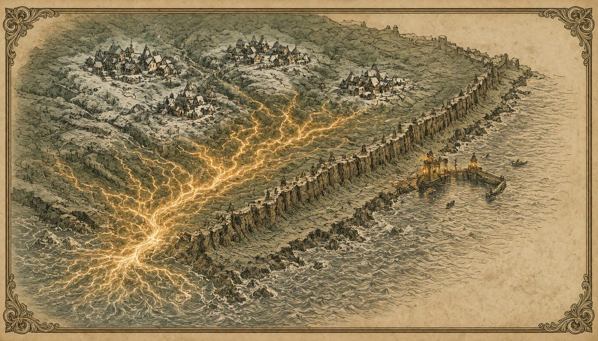

France blames Iran's Revolutionary Guard for cyber attack on 700 retail sites
Paris will propose further sanctions against Iranian entities to its European partners. A Commission spokesperson said it is not the Commission's role to attribute cyber incidents. Iran rejects the accusations, and Paris prosecutors are seeking international arrest warrants.

France on 9 November officially attributed the October attack on refrigeration controllers at about 700 French retail sites to SHAHID KAVEH, a cyber unit of Iran's Revolutionary Guard Corps. It said it would propose to its European partners further sanctions against Iranian entities and individuals involved in the attack.
France called the operation, in its scale and aggressiveness, the first cyber offensive campaign carried out purely for sabotage on national territory. A Commission spokesperson said it is not for the Commission to attribute cyber incidents, since investigations are carried out by national authorities.
Iran's foreign ministry categorically rejected the accusations, calling them baseless and malicious. Paris chief prosecutor Laure Beccuau said her office is seeking international arrest warrants. She cited findings of Farsi usage and IP addresses pointing to devices in Iran, and said the attacks were committed to serve Iran as a foreign power. France's foreign ministry called the attacks unjustifiable and contrary to international law and to the UN norms of responsible state behaviour in cyberspace, which Iran has endorsed.
The attacked systems ran unsecured, with a default password and outside a protected network. A Danfoss spokesperson said most shops took the advised measures, but a small number did not, and those are now the victims. A further wave of incidents hit refrigeration systems on 1 and 2 November. The main security requirements of the Cyber Resilience Act, Regulation (EU) 2024/2847, apply only from 11 December 2027.
The foreign ministry said France would summon Iran's ambassador in Paris to convey its condemnation in the strongest terms. It also reserved the right to take further steps, publicly and non-publicly, that it deems necessary and proportionate in response to the attacks.